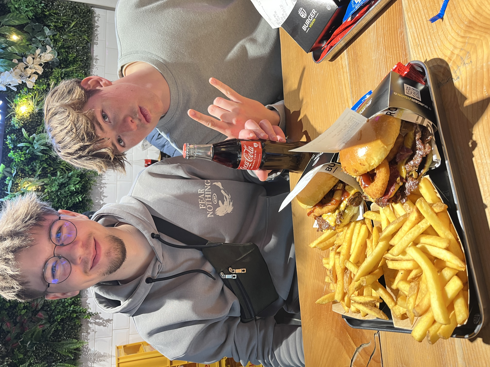
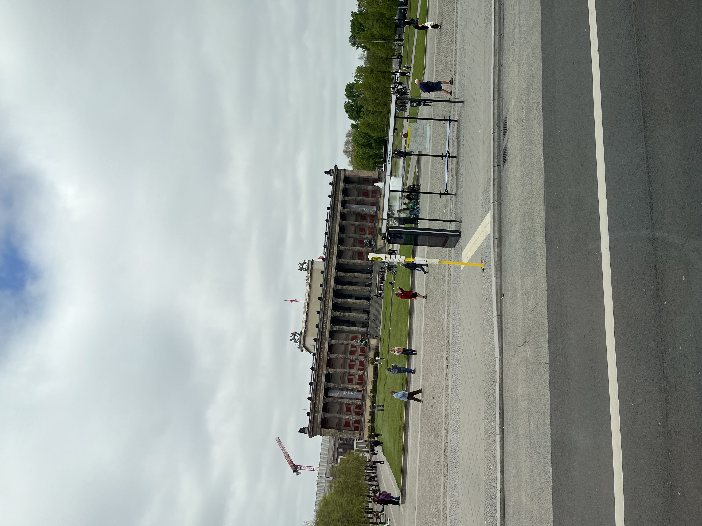

💻 Hack the Future
Hackathon Teamwork

📖 Beschrijving
24 november was het zover. De dag dat ik mijn eerste hackathon ging meedoen. Ik had er uiteraard veel zin in en de afgelopen weken ook erg naar uitgekeken. We verzamelden met wat vrienden op het station van Hasselt om van daar uit de trein te pakken naar Antwerpen, waar de hackathon plaats vond. Na ongeveer een uurtje rijden kwamen we dan aan op station centraal en van daar was het nog een kleine 200 meter wandelen naar het gebouw.
Iedereen werd verzameld in een grote zaal waar koffiekoeken en drinken ter beschikking waren voor alle deelnemers. Na nog een beetje wachten liepen er dan enkele mensen het podium op om ons welkom te heten en te vertellen wat ons die dag te wachten ging staan. Daarna werden we verdeeld in verschillende groepen en naar ons lokaal gestuurd. Daar kregen we nog wat verdere uitleg over onze specifieke ‘challenges’. Dan was het tijd om te beginnen.
Voor de eerste challenge kregen we een kaart met bepaalde waarden en coördinaten van een zeegebied. Het was aan ons om te zoeken naar outliers om zo een gebied af te bakenen dat ‘verdacht’ was. Wanneer je dit gevonden had kon je het laten controleren door de toezichthouder en daarna verder naar de volgende opdracht. Daarbij was het de bedoeling … . Hier hebben we al even over zitten nadenken en toen was het middag.
Tijdens de middag was je vrij om te doen wat je wou. In de grote zaal waar we ook verzamelden aan het begin van de dag waren broodjes voorzien. Uiteraard hebben we hier gebruikt van gemaakt en daarna was het dan tijd voor een bezoekje aan de zoo van Antwerpen. We hadden gratis toegang tot de zoo omdat we deelnamen aan de hackathon.
Daarna was het tijd om verder onze hoofden te kraken over de challenges. Na nog wat zoeken konden we ook de 2e challenge oplossen en was het tijd voor de 3e en ook meteen laatste challenge. Hier kregen we een audiofile waaruit we een boodschap moesten vinden.
De 3e opdracht is ons helaas niet volledig meer gelukt omdat we het belangrijker vonden goed te presenteren wat we wel hadden in plaats van te gokken op het vinden van de 3e oplossing en geen goeie presentatie te hebben. Dan was het dus tijd voor het voorstellen. Elk team ging op zijn beurt naar voor en stelde zijn resultaten voor. Nadat iedereen geweest was moest je individueel stemmen wie je het beste vond.
Vervolgens mochten we terug naar de grote zaal gaan. Daar werden we ruim voorzien van allerlei soorten gerechten zoals pasta, frietjes, burgers enzovoort. Tijdens het eten kwamen er dan opnieuw een paar mensen op het podium om de winnaars bekend te maken. Per Groep konden 2 teams winnen. Eentje was de winnaar van de jury en de 2e was de publieksfavoriet. Ik en Martijn zijn helaas niet in de prijzen gevallen maar we vonden het allebei zeker en vast een geslaagde en leerrijke ervaring. Nadat alle prijzen waren uitgedeeld zijn we dan nog een klein beetje de stad gaan verkennen waarna het tijd was om weer de trein naar huis te pakken en zo een geslaagde hackathon af te sluiten.
🧠 Reflectie
Ik vond dit een zeer leerrijke ervaring. Het is enorm leuk om op een speelse manier je kennis in de praktijk om te kunnen zetten. Verder was het ook zeer interessant om te zien hoe goed die kennis nog toegepast kon worden als er tijdsdruk bij kwam kijken. Dit is nog net dat stapje dichter bij de echte werkwereld waar je soms ook moet leren om onder tijdsdruk minstens even goed of zelfs beter te werken.
Wat mij vooral is bijgebleven, is hoe belangrijk het is om snel te kunnen schakelen. In het begin verlies je toch wat tijd met nadenken over de juiste aanpak, maar eens je bezig bent merk je dat je automatisch efficiënter begint te werken. Ook communicatie speelde hierin een grotere rol dan ik verwacht had. Hoewel we geen vaste taakverdeling hadden, verliep de samenwerking vlot omdat we elkaar goed aanvoelden en snel konden inspelen op elkaars ideeën.
Daarnaast heb ik ook geleerd dat het niet altijd nodig is om alles perfect af te werken. Bij de derde opdracht hebben we bewust gekozen om te focussen op een sterke presentatie in plaats van alles half af te werken. Dit was geen makkelijke keuze, maar achteraf gezien wel de juiste. Het toont aan dat prioriteiten stellen minstens even belangrijk is als technische kennis.
Als werkpunt neem ik vooral mee dat een iets duidelijkere taakverdeling ons misschien nog efficiënter had kunnen maken. Toch ben ik tevreden over hoe we als team hebben gepresteerd. Deze ervaring heeft mij niet alleen technisch iets bijgebracht, maar ook op vlak van samenwerking, communicatie en omgaan met druk.
🌍 Duitsland
IT International

📖 Beschrijving
De reis was zeer leuk. Woensdag 22/04 om 8h ’s ochtends stonden we klaar op de pxl parking in Diepenbeek om met de bus te vertrekken. Ik zat langs Xander op de bus. Eens iedereen was ingestapt vertelde de buschauffeur nog enkele regels etc. en een woordje van de leidinggevende lector Jan Castermans was het tijd om te vertrekken. We zijn in totaal met 1 pauze gereden tot Bielefeld. Daar stond een bezoek aan hun hogeschool gepland. We kregen een uurtje lang een presentatie van 2 lectoren van de school, daarna waren we een middagje vrij en kregen we de kans om hun catering eens te proberen en als laatste kregen we nog een rondleiding van enkele internationale studenten die daar op school zaten. De rondleiding eindigde bij een tentoonstelling van enkele van Davinci’s machines die nagebouwd waren door studenten van de school. Deze hebben we dan even kunnen uittesten.
Vervolgens was het weer tijd voor de bus op te stappen en verder te rijden naar het hostel waar we die nacht zouden blijven slapen. Deze was gelegen in Detmold. Het hostel was zeer mooi en omgeven door sportvelden, klimrekken en een aparte plek voor een kampvuur te bouwen. Aan de balie van het hostel konden we een bal halen dus was het uiteraard tijd voor een potje voetbal. Nadat iedereen zich dan kon douchen was het tijd om het stadje te gaan verkennen. Daar hebben we eerst een pizza gegeten en vervolgens enkele cafés bezocht. De volgende ochtend genoten we van het lekkere ontbijt in het hostel en was het weer tijd voor de valies te pakken en terug op de bus te stappen.
Onze 2e bestemming was Hannover waar een wereldbekende IT-beurs op de planning stond. Zelfs een hele dag was bijlange niet genoeg om alles te kunnen zien. Het was zeer indrukwekkend om te kunnen rondlopen op zo een beurs. Er waren zoveel coole dingen van auto’s en robots tot biertjes te zien en krijgen. Tegen de vroege avond stapte we dan weer op de bus om door te rijden naar het 2e hostel. Die was gelegen in Maagdenburg. De avond/nacht was een beetje gelijkaardig aan de vorige. We begonnen in een café en na een local te leren kennen zijn we met haar de rest van de avond nog wat meegegaan naar andere cafés en eindigde we de avond uiteindelijk met een paar potjes kaarten. ’s Ochtends genoten we weer van een heerlijk ontbijt en was het weer tijd om de bus op te stappen.
Er stond deze keer een iets langere rit op de planning aangezien we helemaal tot Berlijn zouden rijden. Daar eens aangekomen kregen we eerst wat vrije tijd aangezien de kamers nog niet klaar waren. Daarna stond een bezoek aan de Chaos Computer Club op de planning. Zij vertelde ons zo een beetje over wat ze allemaal daar deden. De rest van de avond en de dag erna waren we volledig vrij. Deze tijd hebben we vooral gebruikt om de stad en het nachtleven wat te verkennen.
Zondagochtend was het dan jammer genoeg weer tijd om naar huis te gaan. Na een lange busrit kwamen we dan uiteindelijk terug op de parking van de campus in Diepenbeek aan en kon iedereen terug naar huis. Het einde van een zeer geslaagde reis.
🧠 Reflectie
De reis door Duitsland was een zeer leerrijke en tegelijk plezierige ervaring die zowel op cultureel als op technisch vlak veel heeft bijgebracht. Samen met de klas verschillende steden verkennen zorgde voor een sterke groepssfeer en maakte de reis extra aangenaam, omdat we niet alleen nieuwe plekken ontdekten, maar dit ook konden delen met vrienden en medestudenten. De afwisseling tussen georganiseerde bezoeken en vrije momenten zorgde voor een goede balans tussen leren en ontspanning.
Op IT-vlak was vooral het bezoek aan de hogeschool in Bielefeld en de wereldbeurs in Hannover erg interessant. Het was indrukwekkend om te zien hoe technologie in de praktijk wordt toegepast, van innovatieve hardware tot robotica en softwareoplossingen. Ook het bezoek aan de Chaos Computer Club in Berlijn gaf een uniek inzicht in cybersecurity en ethisch hacken, wat een heel andere kijk gaf op hoe systemen beveiligd en soms ook getest worden. Dit maakte de theorie uit de opleiding veel concreter.
Daarnaast was het ook waardevol om andere studenten en internationale omgevingen te leren kennen. De culturele ervaringen, zoals het verkennen van steden als Detmold, Hannover, Maagdenburg en Berlijn, het proeven van lokale sfeer en het ontdekken van het nachtleven, maakten de reis compleet. Alles samen was deze reis een perfecte combinatie van leren, ontdekken en samen plezier maken, en een ervaring die zeker zal blijven bijleren in de verdere opleiding en toekomst.
🎤 Lieven Scheire
AI Talk

📖 Beschrijving
De zaalshow van Lieven Scheire rond artificiële intelligentie was een bijzonder interessante en tegelijk heel toegankelijke ervaring. Vanaf het moment dat de show begon, werd duidelijk dat het niet ging om een klassieke lezing, maar eerder om een mix van comedy, wetenschap en actuele technologie. De zaal zat vol met een heel gevarieerd publiek: studenten, IT-professionals, maar ook mensen die gewoon nieuwsgierig waren naar AI. Dat zorgde meteen voor een leuke dynamiek.
Lieven Scheire slaagde erin om een onderwerp dat vaak als complex of technisch wordt gezien, op een heel begrijpelijke manier uit te leggen. Hij begon met de basis: wat AI eigenlijk is en hoe snel het de laatste jaren geëvolueerd is. Daarbij gebruikte hij veel herkenbare voorbeelden, zoals aanbevelingsalgoritmes op sociale media, spraakassistenten en beeldgeneratie tools zoals Midjourney of Stable Diffusion. Daardoor werd het meteen duidelijk dat AI niet iets abstract is dat in labo’s blijft, maar iets dat dagelijks gebruikt wordt door iedereen.
Wat de show sterk maakte, was de manier waarop moeilijke concepten werden vertaald naar eenvoudige analogieën. Zo legde hij bijvoorbeeld uit hoe taalmodellen werken zonder echt diep in de wiskundige details te gaan, maar toch met voldoende inhoud om te begrijpen wat er onderliggend gebeurt. Hij gebruikte humor op de juiste momenten, waardoor de show nooit zwaar of saai werd, maar wel inhoudelijk sterk bleef. Zo werd er bijvoorbeeld ook soms ingespeeld op het feit dat er een erotica beurs aan de gang was in het gebouw naast de zaal. Hierdoor bleef de show luchtig.
Naast de technische uitleg werd er ook veel aandacht besteed aan de impact van AI op de maatschappij. Er kwamen vragen aan bod zoals: gaan bepaalde jobs verdwijnen? Hoe betrouwbaar is AI eigenlijk? En wat betekent het voor creativiteit als machines steeds beter worden in het genereren van tekst, beelden en muziek? Deze vragen maakten duidelijk dat AI niet alleen een technologische evolutie is, maar ook een maatschappelijke verschuiving.
Er waren ook momenten waarop hij live voorbeelden toonde of situaties schetste waarin AI fouten maakt of onverwachte resultaten geeft. Dat maakte het geheel extra interessant, omdat het niet alleen ging over de sterke kanten van AI, maar ook over de beperkingen en risico’s. Vooral dat evenwicht tussen enthousiasme en kritische reflectie vond ik sterk.
Wat mij ook opviel, was hoe vlot hij kon schakelen tussen humor en inhoud. Op sommige momenten bracht hij een grap, waarna hij meteen terug overschakelde naar een technisch of ethisch punt. Dat hield de aandacht constant vast. Je merkte ook dat hij heel goed wist hoe hij een groot publiek kon meenemen in een verhaal, zonder dat mensen met minder voorkennis verloren raakten.
Na afloop bleef vooral het gevoel hangen dat AI veel dichter bij ons leven staat dan we soms beseffen. Het is geen verre toekomst meer, maar iets dat nu al invloed heeft op hoe we werken, communiceren en creatief bezig zijn. De show gaf een bredere kijk op technologie en zorgde ervoor dat ik anders ben beginnen nadenken over hoe snel deze evoluties gaan.
🧠 Reflectie
De zaalshow van Lieven Scheire heeft mijn beeld van artificiële intelligentie op een positieve manier verbreed. Voor deze ervaring zag ik AI vooral als iets technisch, iets dat vooral relevant is voor programmeurs of bedrijven die met data werken. Na de show ben ik me er meer van bewust geworden dat AI eigenlijk veel breder en toegankelijker is dan ik initieel dacht.
Wat mij vooral is bijgebleven, is hoe sterk AI al geïntegreerd is in het dagelijks leven zonder dat we daar altijd bij stilstaan. Dingen zoals aanbevelingen op YouTube, automatische vertalingen of chatbots lijken vanzelfsprekend, maar achterliggend zit daar een heel complexe technologie achter. Door de uitleg van Lieven Scheire kreeg ik meer inzicht in hoe die systemen eigenlijk werken, zonder dat het te technisch werd.
Daarnaast vond ik het interessant hoe hij ook de negatieve kanten en uitdagingen van AI aanhaalde. In plaats van enkel te focussen op de voordelen, werd er ook stilgestaan bij mogelijke risico’s zoals foutieve informatie, jobimpact en ethische vragen. Dat zorgde ervoor dat ik AI nu niet enkel zie als iets positiefs, maar ook als iets waar kritisch over moet worden nagedacht.
Wat ik ook waardevol vond, is de manier waarop complexe kennis kan worden overgebracht. De combinatie van humor en duidelijke voorbeelden maakte dat ik alles goed kon volgen, zelfs zonder diepgaande voorkennis. Dat is iets dat ik zelf ook kan meenemen naar mijn eigen studies en projecten: moeilijke informatie eenvoudiger en toegankelijker maken voor anderen.
Tot slot heeft deze ervaring mij vooral doen beseffen dat technologie niet iets is dat “gewoon gebeurt”, maar iets waar we zelf een rol in spelen. Hoe we AI gebruiken, zal bepalen welke impact het heeft op de toekomst. Dat maakt het belangrijk om niet alleen technisch sterk te zijn, maar ook bewust om te gaan met de keuzes die we maken rond technologie.